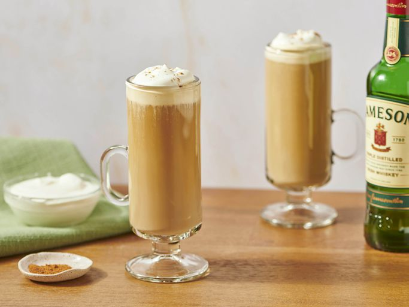

Irish coffee is a delicious after-dinner cocktail. It's easy to make with freshly brewed coffee, Irish whiskey, and whipped cream. It's traditionally sweetened with brown sugar but Irish cream liqueur adds that little touch of luxury!
Irish coffee is a hot after-dinner cocktail made with sweetened coffee and Irish whiskey, topped with whipped cream. This recipe adds a splash of Irish cream liqueur to make it irresistible!